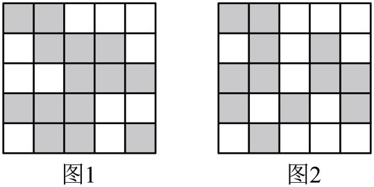

专题2.6 有理数的乘方、有理数的混合运算（举一反三讲义）
【北师大版2024】

【题型1 有理数幂的概念】 2
【题型2 有理数的乘方运算】 2
【题型3 有理数乘方的逆运算】 2
【题型4 乘方运算的符号规律】 3
【题型5 乘方的应用】 3
【题型6 有理数的混合运算】 4
【题型7 有理数混合运算的实际应用】 5
【题型8 程序流程图与有理数的计算】 7
【题型9 计算“24”点】 8
【题型10 乘方中的规律探究】 9
知识点1 有理数的乘方
1. 一般地，n个相同的乘数ɑ相乘，即a⋅a·⋯·an个，记作an．求n个相同乘数的积的运算，叫作乘方，乘方的结果叫作幂．
2. an中，a叫作底数，n叫作指数，an读作a的n次方（或a的n次幂）．
乘方运算的结果及符号的规律
正数：正数的任何次幂都是正数负数：负数的奇次幂是负数负数的偶次幂是正数 0：0的任何正整数次幂都是0
知识点2 有理数的混合运算顺序
1. 先乘方，再乘除，最后加减；
2. 同级运算，从左到右进行；
3. 如有括号，先做括号内的运算，按小括号、中括号、大括号依次进行．
有理数运算分三级，加减是第一级运算，乘除是第二级运算，乘方是第三级运算．运算顺序是先算高级，再算低级；同级运算按从左到右的顺序进行；对于含有多重括号的运算，一般先算小括号内的，再算中括号内的，最后算大括号内的．
【题型1 有理数幂的概念】
【例1】（2024·河北沧州·模拟预测）若23+23+23+....+23k个23=2m（k>1，k,m都为正整数，则m的最小值为（ ）
A．3 B．4 C．6 D．9
【变式1-1】（22-23七年级上·江西宜春·阶段练习）-23 的底数是 指数是 表示 ．
【变式1-2】（2024七年级上·全国·专题练习）下列说法正确的有（ ）
①没有平方得−9的数；②−a2是负数；③m+d2是正数；④任何一个小于1的数都大于它的平方．
A．1个 B．2个 C．3个 D．4个
【变式1-3】（24-25七年级上·河北唐山·期末）3+3+3+⋅⋅⋅+3m个+2×2×2×⋅⋅⋅×2n个的结果可表示为（ ）
A．3m+2n B．m3+2n C．3m+2n D．3m+2n
【题型2 有理数的乘方运算】
【例2】（24-25七年级上·山东济宁·期中）比较大小：−233 −322（填>或<）．
【变式2-1】（2025·福建泉州·二模）已知x−20252+y+1=0，则yx的值是 ．
【变式2-2】（24-25七年级上·上海闵行·期中）计算：−1411×166= ．
【变式2-3】（24-25七年级上·广东广州·期末）利用二进制数加法运算法则计算110102+1112，并把计算结果转化为十进制数是 ．
【题型3 有理数乘方的逆运算】
【例3】（2025·四川广安·模拟预测）一般地，n个相同的因数a相乘a⋅a⋅a⋅a⋯⋅a记作an，如2×2×2=23=8．此时，3叫做以2为底的8的“劳格数”，记为L28，则L28=3．一般地，若an=b（a>0且a≠1），则n叫做以a为底的b的“劳格数”，记为Lab=n，如34=81，则4叫做以3为底的81的“劳格数”，记为L3(81)=4．则L39,L327,L3243满足关系式 ．
【变式3-1】（22-23七年级上·广东东莞·期中）62=36,2×32=22×32=4×9=36，由此你能算出236×1233=（ ）
A．6 B．8 C．18 D．十分麻烦
【变式3-2】（22-23七年级上·山东青岛·阶段练习）已知|a|=2,b2=25,3c=27，且ab>0，则a−b+c的值为（ ）
A．10 B．6 C．3 D．6或者0
【变式3-3】（22-23七年级上·福建厦门·期中）若126×38=p，则126×36的值可以表示为（ ）
A．16p B．p−9 C．p−6 D．19p
【题型4 乘方运算的符号规律】
【例4】（23-24七年级上·广东揭阳·期末）计算： −11+−12+−13+⋯+−110=
【变式4-1】（23-24七年级上·河南信阳·期中）在−12021，−23，−711，0中，非负数有（ ）
A．1个 B．2个 C．3个 D．4个
【变式4-2】（24-25七年级上·四川南充·期中）已知y=−(x−6)4+2024的最大值为 ．
【变式4-3】（23-24七年级上·河南漯河·阶段练习）当整数n为 时，(−1)n=−1；若n是正整数，则(−1)n+(−1)n+1= ．
【题型5 乘方的应用】
【例5】（24-25七年级上·江苏宿迁·期中）根据我国古代《易经》记载，远古时期人们通过在绳子上打结来记录数量，即“结绳记数”．如图，一位妇女在从右到左依次排列的绳子上打结，满七进一，用来记录采集到的野果的个数．已知她一共采集到的野果数不少于75个，则她在第2根绳子上打结的可能情况有（ ）

A．1种 B．2种 C．3种 D．4种
【变式5-1】（24-25七年级上·江苏宿迁·期中）一根1米长的绳子，第一次剪去一半，第二次剪去剩下的一半，如此下去，第6次后剩下的绳子的长度为（ ）
A．123米 B．125米 C．126米 D．1212米
【变式5-2】（24-25七年级上·云南昆明·期末）二进制在计算机科学中有广泛的应用，计算机和依赖计算机的设备都使用二进制来表示数字和数据．二进制是逢二进一，其各数位上的数字为0或1，并利用角标表示二进制数，例如，(1011)2就是二进制数1011的简单写法．在学习教科书《进位制的认识与探究》以后，小明查阅了资料并进行了思考，发现以下两种方法均可实现二进制与十进制之间的转换．
以98为例：
方法一：因为98=64+32+2
=1×26+1×25+0×24+0×23+0×22+1×21+0×20
所以98=(1100010)2．
方法二：用如图的短除法算式表示：

请你根据以上材料，把123转换为五进制数是（ ）
A．(1111011)5 B．(123)5 C．（443）5 D．(344)5
【变式5-3】（2024七年级上·全国·专题练习）某软件用户等级用四个标识图展示，从低到高分别为星星、月亮、太阳、皇冠，采用“满四进一”制，一开始是星星，1个星星为1级，4个星星等于1个月亮，4个月亮等于1个太阳，4个太阳等于1个皇冠．某用户的等级标识图为两个皇冠，则该用户的等级为（ ）
A．64 B．128 C．256 D．512
【题型6 有理数的混合运算】
【例6】（23-24七年级上·内蒙古呼伦贝尔·期末）小王利用计算机设计了一个计算程序，输入和输出的数据如下表：
输入 | 1 | 2 | 3 | 4 | 5 | … |
输出 | 12 | 25 | 310 | 417 | 526 | … |
那么，当输入数据是8时，输出的数据是（ ）
A．861 B．863 C．865 D．867
【变式6-1】（24-25六年级上·山东烟台·期末）下列运算错误的是（ ）
A．−14+7−+5=−12
B．−32−−4÷−2=9+4÷2
C．−7÷2×−12=7÷2×12
D．713×−9+−3×−713−713×2=713×−9−3+2
【变式6-2】（24-25七年级上·安徽合肥·期末）用一排6个黑白圆圈来表示数，如图分别表示数1−5，则●○○●●○表示的数是 ．

【变式6-3】（24-25七年级上·浙江台州·期末）对正整数n反复进行下列两种运算：①若n是偶数，就除以2；②若n是奇数，就乘以3加1．例如：正整数6经过一次操作后的结果是3，经过两次操作后的结果是10．若某正整数m经过4次操作后的结果是2，则正整数m的值是 ．
【题型7 有理数混合运算的实际应用】
【例7】（24-25七年级下·重庆·阶段练习）二维码在我们日常生活中应用越来越广泛，它是用某种待定的几何图形按照一定的规律在平面分布的、黑白相间的、记录数据符号信息的图形；在代码编制上巧妙利用构成计算机内部逻辑基础的“0”，“1”，使用若干个与二进制相对应的几何图形来表示数值（黑色代表1，白色代表0）．如图是某次考试中两位同学的准考证号的二维码的简易编码，如图1，是同学“小胡”的准考证号的二维码的简易编码，其中第一行代表二进制的数字11000，转化成10进制为：1×24+1×23+0×22+0×21+0×1=24，同理，第二行至第五行代表二进制的数字分别为1110，111，11100，1101，转化成10进制为：14，07，28，13，将五行编码组合到一起就是“小胡”的准考证号2414072813，其中第一行编码“24”和第二行编码“14”表示区域和学校，第三行编码“07”表示班级为07班，第四行编码“28”表示考场号为28，第五行编码“13”表示座位号是13；若图2是本次考试“小张”同学的准考证号的二维码的简易编码，则小张的准考证号为（ ）

A．2410252110 B．2010272108 C．2212272408 D．2410272108
【变式7-1】（24-25七年级上·四川成都·期末）某校一幢教学楼共有5层，相邻两层之间楼梯的台阶均为18级，从1层到5层参加舞蹈社团的学生人数分别为9，7，5，5，6．若在某层楼确定活动地点，能使所有参加舞蹈社团的同学到活动地点所经过的台阶数之和最小，则台阶数之和最小为 级．
【变式7-2】（24-25七年级下·重庆沙坪坝·期末）2025重庆沙坪坝全球校友半程马拉松现场氛围热烈．某学校9人组成的啦啦队在站点表演三个助威节目，候场时间为从首个节目开始至参演节目开始前的时间间隔（不考虑换场等因素），各节目参与人数及表演时长（单位：min）如下表所示：
节目 | 甲 | 乙 | 丙 |
人数 | 3 | 4 | 2 |
时长 | 6 | 4 | 2 |
若节目按丙→乙→甲的顺序表演，则9位学生的候场时间之和是（ ）
A．6 B．20 C．26 D．44
【变式7-3】（24-25七年级上·重庆渝北·期末）正所谓：“人有人言，灯有灯语”．灯语（灯光通信）是船只之间通信的一种通用化语言，在国际上的使用十分广泛．利用灯光，以二进制的原理传递信息，可以帮助船员在较远的目视距离相互沟通．例如：“○”表示亮红灯．”“●”表示亮绿灯．两只远洋航行的船只用亮红灯和亮绿灯来进行交流，并在启航前作如图所示的约定：

根据约定的规则，下列说法正确的有（ ）
①“●○○○”表示字母H：
②若要表示26个英文字母，需要6盏灯；
③某船先后发出“●○○●●”、“●●●●”、“●○○●●”表示它遇到了危险，在求救．
A．0个 B．1个 C．2个 D．3个
【题型8 程序流程图与有理数的计算】
【例8】（24-25八年级上·贵州遵义·期末）定义一种对正整数n的“F”运算，①当n为奇数时，结果为3n+5；②当n为偶数时，结果为k2n（其中k是使k2n为奇数的正整数），并且运算重复进行，例如，取n=26，如图所示；若n=449，则第“F④”的运算的结果是（ ）
A．1 B．3 C．7 D．8
【变式8-1】（24-25七年级上·辽宁丹东·期中）如图是一个“数值转换机”的示意图，当x=−1，y=−2时，输出的结果是 ．

【变式8-2】（24-25七年级上·陕西西安·期末）如图是小宇用计算机设计的一个有理数运算的程序框图．若输入的数a为1，则输出的结果是（ ）

A．−32 B．32 C．−278 D．278
【变式8-3】（24-25九年级上·重庆江北·期末）对任意正整数n，若n为偶数则除以2，若n为奇数则乘3再加1，在这样一次变化下，我们得到一个新的自然数，在1937年LotharCollatz提出了一个问题：如此反复这种变换，是否对于所有的正整数，最终都能变换到1呢？这就是数学中著名的“考拉兹猜想”．如果某个正整数通过上述变换能变成1，我们就把第一次变成1时所经过的变换次数称为它的路径长，例如5经过5次变成1，则路径长m=5．下列说法：
①无论输入的正整数n是奇数还是偶数，当路径长m≥4时，总能得到连续四次变换的结果依次是24，23，22，21；
②若输入正整数n，变换次数m，当m=8时，n的所有可能值只有4个；
③若输入正整数n，变换次数m，当m=9时，n的所有可能值中最大是512，最小是13．
其中正确的个数是（ ）
A．3个 B．2个 C．1个 D．0个
【题型9 计算“24”点】
【例9】（24-25七年级上·四川成都·期末）24点游戏是一种益智游戏，24点是把4个整数（一般是正整数）通过加、减、乘、除或乘方等运算（可以使用括号），使最后的计算结果是±24的一个数学游戏（每个数字均使用1次）．写出1，2，2，3的24点游戏的一种计算式 ．
【变式9-1】（24-25七年级上·广东佛山·期末）游戏“24点”规则如下：从一副扑克牌（去掉大王、小王）中任意抽取4张，根据牌面上的数字进行混合运算（每张牌必须用一次且只能用一次），使得运算结果为24，其中红色（方块、红桃）扑克牌代表负数，黑色（梅花、黑桃）扑克牌代表正数．请用如图抽取出的4张牌，写出一个符合规则的算式： ．

【变式9-2】（23-24六年级上·山东威海·期末）有一种“二十四点”游戏，其游戏规则是：任取1至13之间的四个自然数，将这四个数（每个数用且只用一次，可以加括号）进行有理数混合运算，使其结果等于24．现有四个有理数1,2,2,3，请仿照“二十四点”游戏规则写出一个算式 ，使其结果等于24．
【变式9-3】“24点”游戏规则是：从一副牌中（去掉大、小王）任意抽取4张牌，用上面的数字进行混合运算，使结果为24或—24.其中红色代表负数，黑色代表正数，A，J，Q，K分别代表1，11，12，13，例如张毅同学抽取的4张牌分别为红桃4、红桃3、梅花6、黑桃2，于是张毅同学列出的算式为（－4）×（－3－6÷2）＝24，现在张毅同学想挑战“36点”，将这四张牌中的任意一张换成其它牌，使结果为36或—36，下列方法可行的有几种：①将红桃4换成黑桃6；②将红桃3换成红桃6；③将梅花6换成黑桃Q；④将黑桃2换成黑桃A（ ）
A．1种 B．2种 C．3种 D．4种
【题型10 乘方中的规律探究】
【例10】（24-25七年级上·河南商丘·期末）为了求1+2+22+23+⋯+220的值，可令A=1+2+22+23+⋯+220，则2A=2+22+23+24+⋯+221，因此A=2A−A=221−1，所以1+2+22+23+⋯+220=221−1．仿照以上推理，计算1+7+72+73+⋯+72025的结果为（ ）
A．72025−1 B．72026−1 C．72025−16 D．72026−16
【变式10-1】（24-25七年级下·福建漳州·期中）我们规定一个新数“i”，一切有理数可以与新数进行四则运算，且原有的运算律和运算法则仍然成立，i1=i,i2=−1,i3=i2⋅i=−i,i4=i2⋅i2=−1×−1=1，那么i1+i2+i3+⋯+i2024+i2025= ．
【变式10-2】（24-25七年级上·广东广州·期中）观察下图三行数：
−2，4，−8，16，−32，64，...；①
0，6，−6，18，−30，66，...；②
−1，2，−4，8，−16，32，...；③
取每行数的第9个数，这三个数的和为 ；
【变式10-3】（22-23七年级上·湖北武汉·期中）计算机利用的是二进制数，它共有两个数码0，1，将一个十进制数转化为二进制，只需把该数写出若干2n数的和，依次写出1或0即可．如1910=16+2+1=1×24+0×23+0×22+1×21+1=100112为二进制下的五位数，则十进制2022是二进制下的（ ）
A．10位数 B．11位数 C．12位数 D．13位数